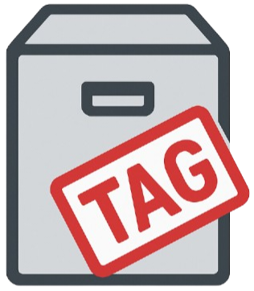

Catalog JSON
Complete ArchiveTagger metadata records, taxonomy, and text index.

ZZX-LABS R&D // SOFTWARE // WEB MIRROR
Local-first archive cataloging, metadata extraction, content fingerprinting, taxonomy tagging, duplicate analysis, search, preview, and AI-dataset structuring.
INSTALL-FREE CAPABILITY LAYER
BATCH INGESTION
Add files or fetch a CORS-accessible URL. ArchiveTagger fingerprints each item, extracts browser-readable metadata, indexes text, and applies taxonomy rules.
Documents, text, images, audio, video, ZIP/TAR archives, datasets, and code.
ArchiveTagger ready.
INDEXED COLLECTION
Browse every indexed record. Select a row to inspect its metadata, tags, hashes, extracted text, and current-session preview.
| Name | Category | Size | Tags | SHA-256 |
|---|---|---|---|---|
| No records. | ||||
KEYWORD TAXONOMY
Define reusable tag rules. Rules match filename, extracted text, MIME type, extension, and existing metadata; re-run auto-tagging at any time.
LOCAL SEARCH INDEX
Search filenames, tags, extracted text, MIME types, extensions, and metadata. Results are ranked locally using field-weighted token overlap.
CONTENT FINGERPRINTS
Group exact duplicates by SHA-256. Images also receive an 8×8 perceptual average hash so visually similar images can be surfaced by Hamming distance.
CONTENT INSPECTION
Preview the selected record when its original file is still present in the current browser session. Persisted catalog metadata remains available later.
ArchiveTagger.registerOCRProvider().
PRESERVATION & DATASETS
Export catalog metadata for preservation, research analytics, or AI dataset structuring. Import previous ArchiveTagger catalog JSON without raw files.
Complete ArchiveTagger metadata records, taxonomy, and text index.
Flat metadata table for spreadsheets, research, and archival inventories.
One record per line for ML/RAG/data-engineering workflows.
PROJECT
ArchiveTagger catalogs heterogeneous offline/online datasets, extracts metadata, computes content fingerprints, maps records into keyword taxonomies, and prepares structured indexes for digital preservation, research, and dataset engineering.
WEB PARITY
| Capability | Web | Notes |
|---|---|---|
| Batch local file ingestion | YES | File API + drag/drop. |
| URL ingestion | YES* | Subject to CORS. |
| SHA-256 fingerprints | YES | Web Crypto. |
| Image perceptual hash | YES | Canvas 8×8 average hash. |
| Text extraction/indexing | YES | Text/JSON/CSV/code formats. |
| Image/audio/video metadata | YES | Browser media decoders. |
| ZIP/TAR inventory | YES | Read-only listing. |
| OCR | PROVIDER | Tesseract.js or custom OCR provider. |
| Taxonomy tagging | YES | Local rules. |
| Catalog persistence | YES | IndexedDB metadata only. |
LOCAL-FIRST
Raw imported files are never uploaded by the supplied page. Archive inventory code reads ZIP/TAR structures without extracting them onto the host filesystem. Persisted catalog records store derived metadata, tags, fingerprints, archive entry names, and extracted text; raw source files remain under user control.